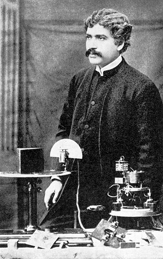
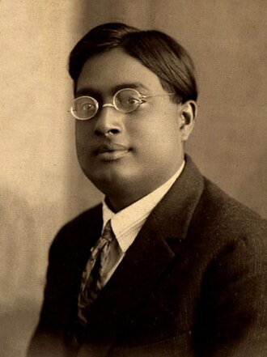
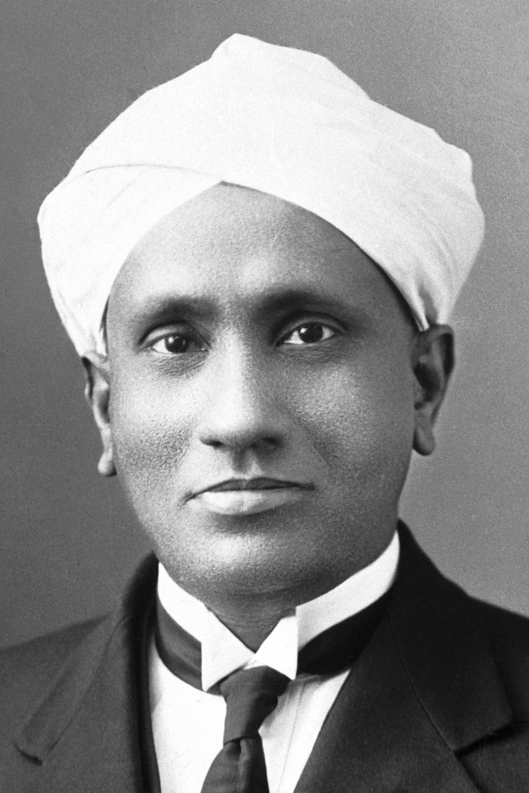
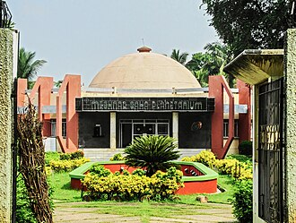
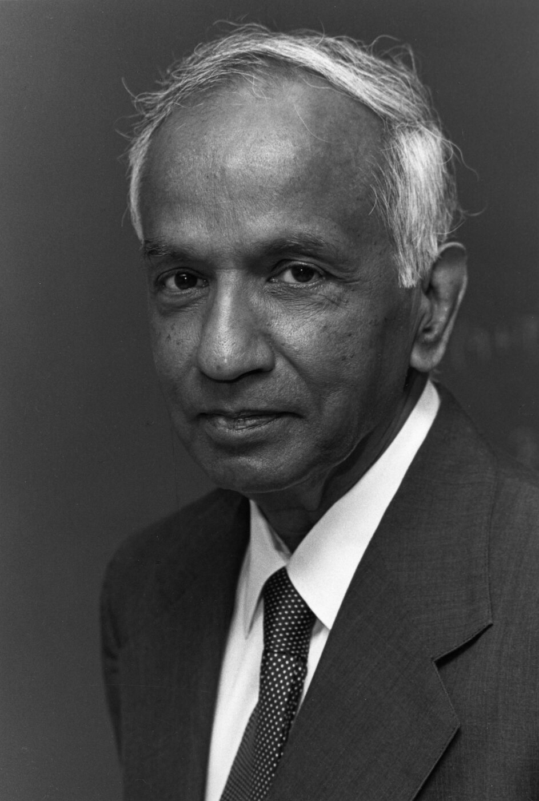
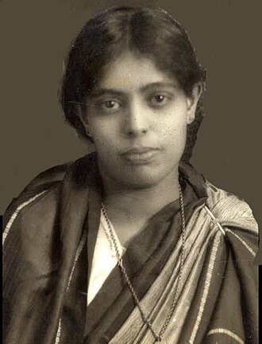
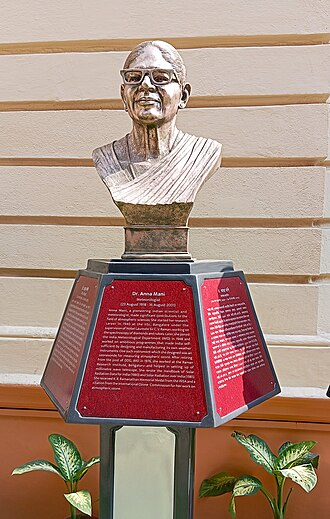
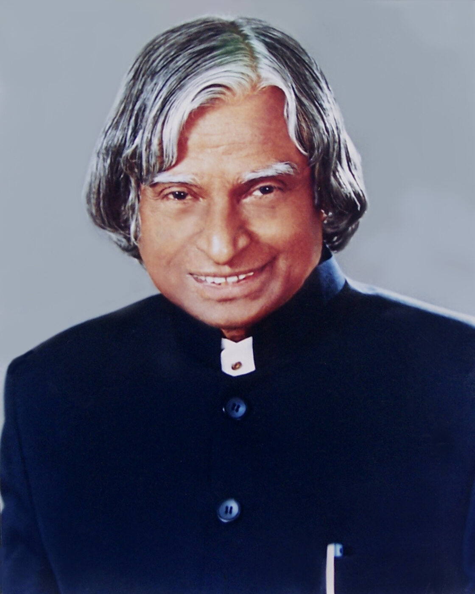
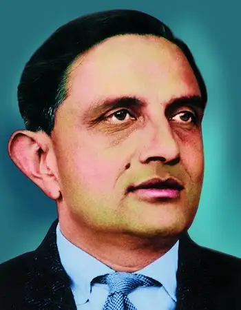
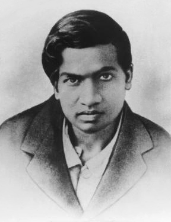

Science is a shared journey
Science Connections
Meet scientists from Bharat, explore recent space missions, and learn how modern technology works.
Meet the photo grid, then play 20 questions. Be proud of Bharat and humble about science: discovery grows through questions, careful testing, and teamwork across the world.










Loading question...
Photo and fact notes
Portraits are local copies from Wikimedia Commons. Some cards use a monument where a suitable free portrait was not available. The quiz facts are written for children and use careful credit: science develops through many people and earlier ideas.
Sources: J. C. Bose, S. N. Bose, C. V. Raman, Meghnad Saha, S. Chandrasekhar, Janaki Ammal, Anna Mani, A. P. J. Abdul Kalam, Vikram Sarabhai, and Srinivasa Ramanujan.
{kind=link}
{kind=link}
{kind=link}
{kind=link}
{kind=link}
{kind=link}
{kind=link}
{kind=link}
{kind=link}
.jpg){kind=link}
Recent science and technology facts: ISRO 2025 achievements, NASA-ISRO NISAR mission, Axiom-4 experiments, Aditya-L1, VIKRAM3201, National Quantum Mission, solar energy, and responsible AI learning.